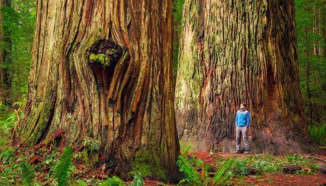
Geografisch Arboretum Tervuren
Wandelgids met kaart, GPS en plantenfiches
Op zoek naar de eiken? De site Eiken in Belgische tuinen heeft uitgebreide eikfiches, en een eikenkaart van Tervuren. Elke eik in deze gids linkt naar zijn eikfiche.
Op ruim 100 hectare in het Zoniënwoud liet professor Charles Bommer vanaf 1902 een arboretum aanleggen als een echt bos: elke groep stelt een bostype voor uit een streek van de wereld. Deze gids kent 666 taxa en ruim 32.000 bomen, in 1547 reeksen en 2241 afzonderlijk genummerde bomen.
Bewegwijzerde lussen →
Themawandelingen →
Nieuwe Wereld →
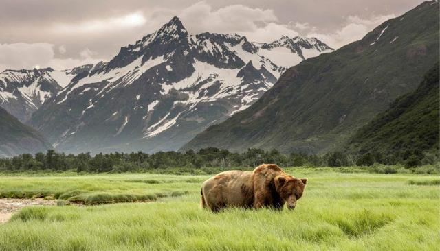
1 Alaska, Zuidelijk Kustgebergte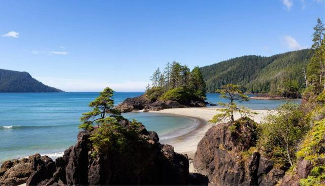
2 Brits Columbië, Kustgebergte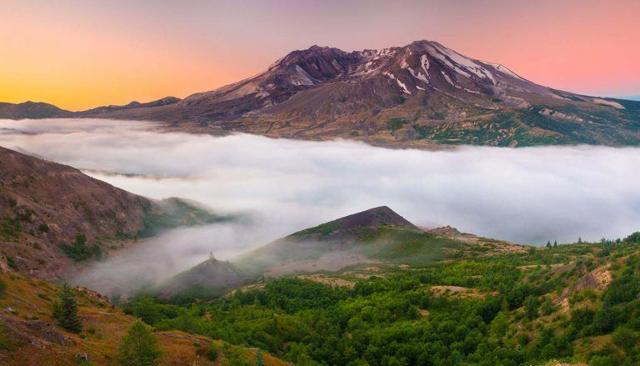
3 Washington, Cascadegebergte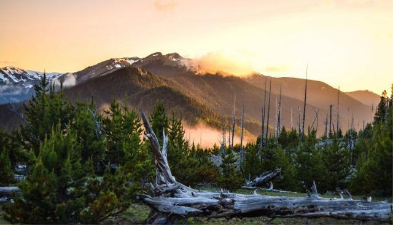
4 Washington, Olympicgebergte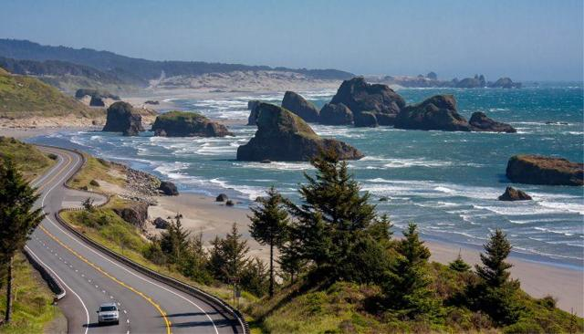
5 Oregon, Kustgebergte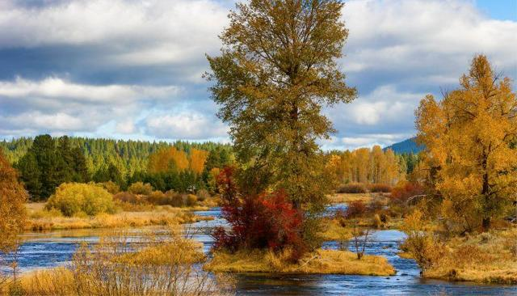
6 Californië, Kust- en Klamathgebergte7 Californië, Sierra Nevada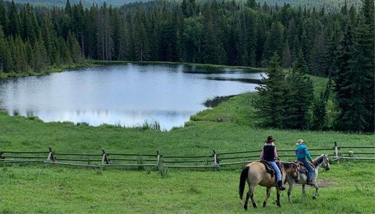
8 Idaho & Montana, Noordelijk Rotsgebergte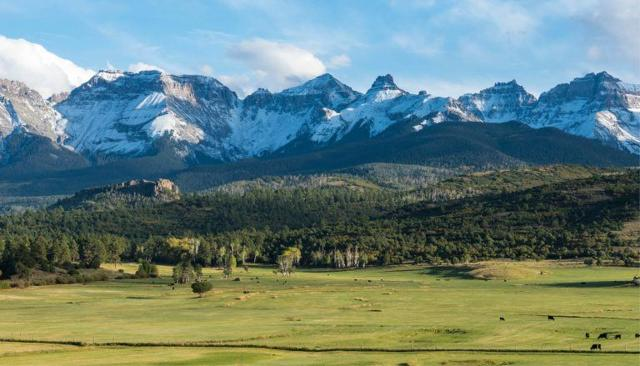
9 Colorado & New Mexico, Zuidelijk Rotsgebergte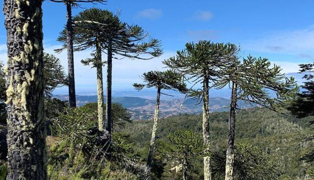
10 Chili & Argentinië, Andesgebergte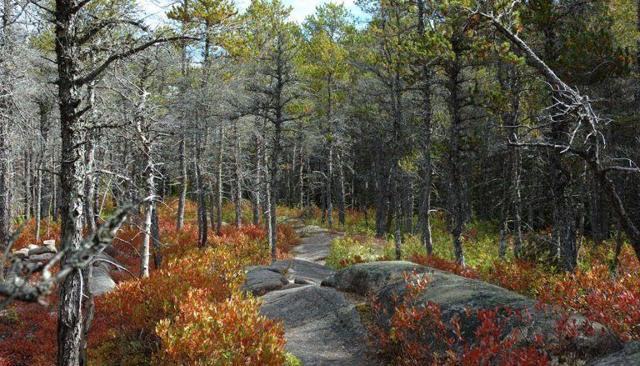
11 Noord-Canada, Boreaal bosgebied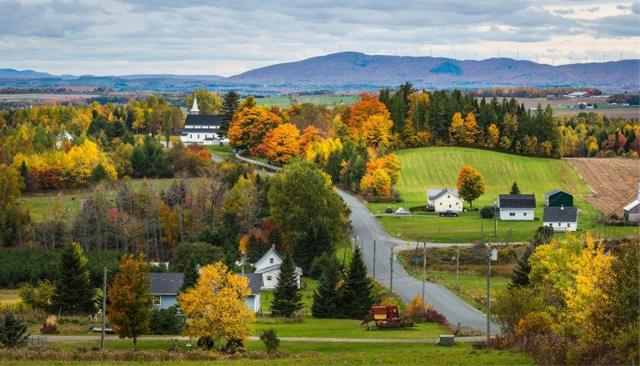
12 New Brunswick, Acadisch bosgebied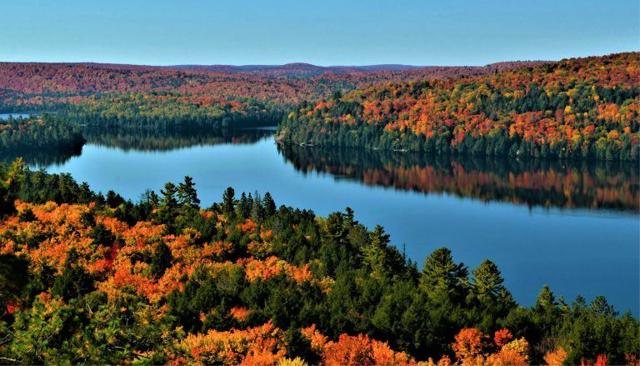
13 Ontario & Québec, Gebied van de Grote Meren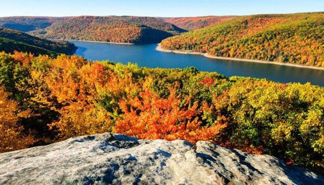
14 West-Pennsylvania, Allegheny plateau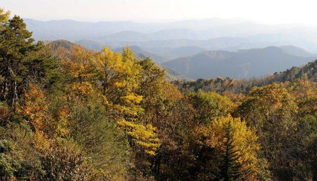
15 Oost-USA, Appalachengebergte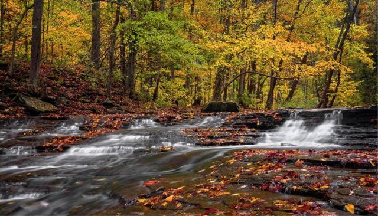
16 Oost-USA, Benedenstroom Ohio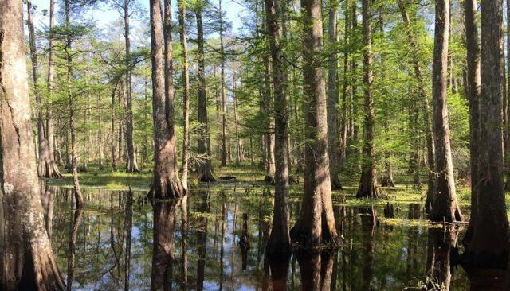
17 Zuidoost-USA, Benedenstroom Mississippi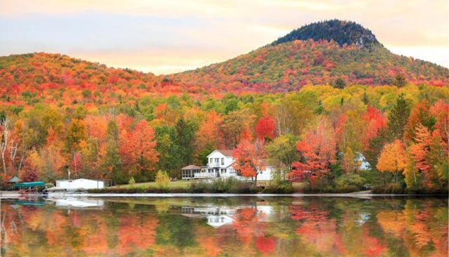
18 New Hampshire, White Mountains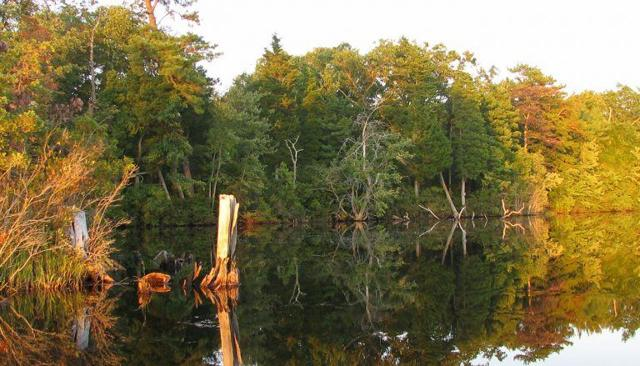
19 New Jersey, Piedmont plateau en kustvlakte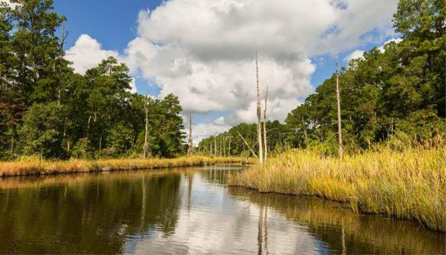
20 North Carolina, KustvlakteOude Wereld →
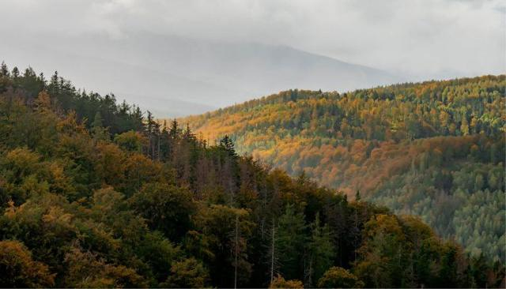
21 Noord-Tjechië, Oostelijk Sudetengebergte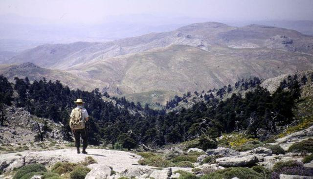
22 Oost-Frankrijk, Westelijke Alpen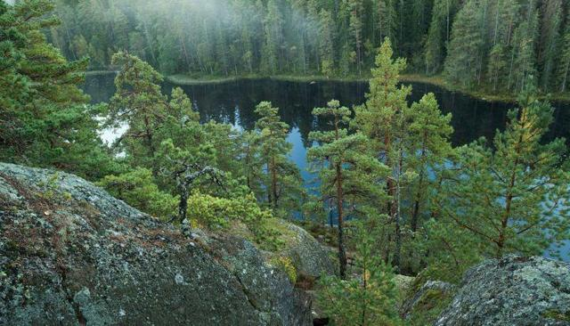
23 Zuid-Zweden, Götaland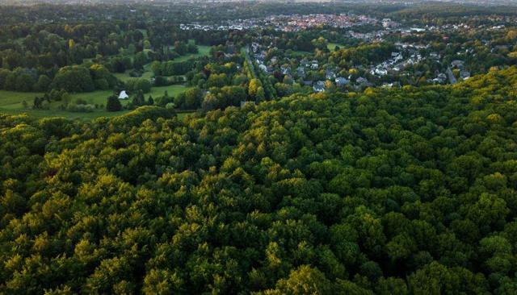
24 België, Atlantisch loofbosgebied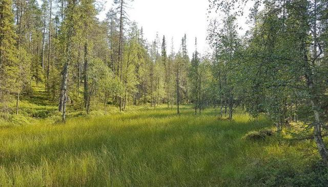
25 Noordwest-Rusland, Schiereiland Kola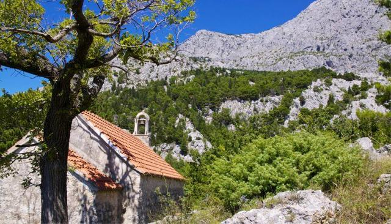
26 Bosnië en Herzegovina, Dinarische Alpen 27 Continentaal Griekenland, Pindosgebergte
27 Continentaal Griekenland, Pindosgebergte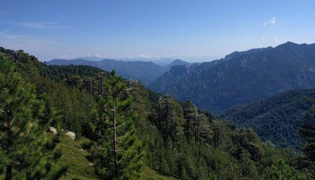
28 Zuid-Frankrijk en Zuid-Italië, Gebergtebossen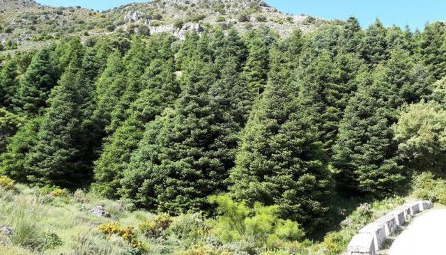
29 Zuid-Spanje en Noord-Marokko, Straat van Gibraltar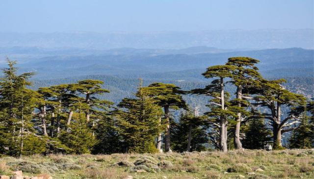
30 Algerije, Baborgebergte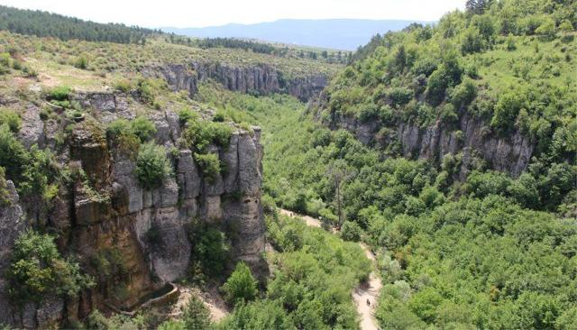
31 Turkije, Anatolië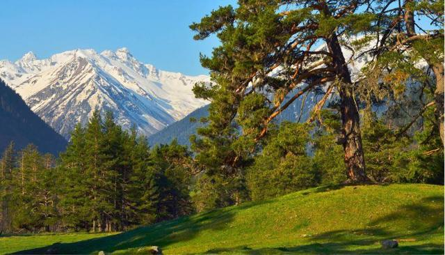
32 Georgië, Kaukasus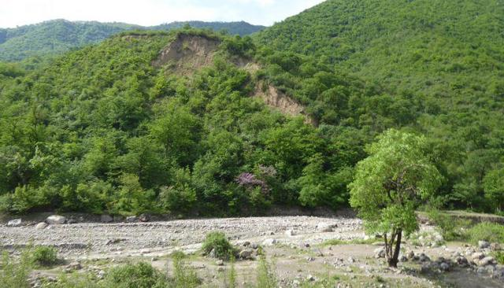
33 Noord-Iran, Elboersgebergte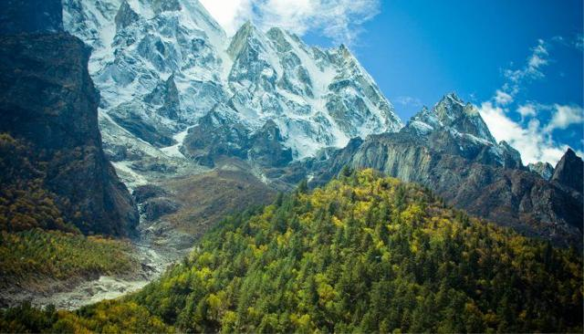
34 West-Nepal, Himalayagebergte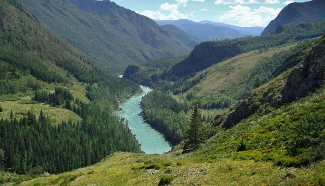
35 Zuid-Siberië, Altaï-Sayangebergte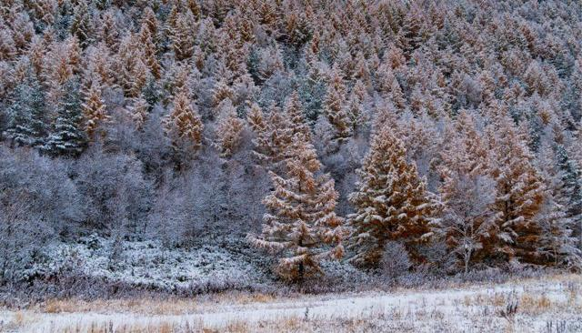
36 Noord-China & Zuidoost-Siberië, Sachalin & Mantsjoerije37 China, Midden-Chinese provincies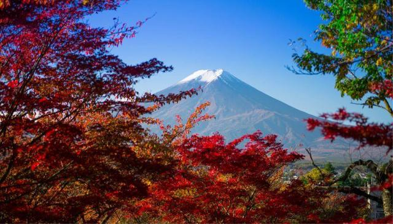
38 Japan, Fujiberg39 Japan, Honshu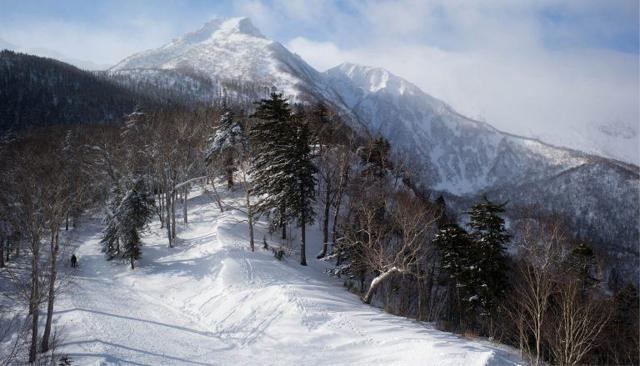
40 Japan, Hokkaido